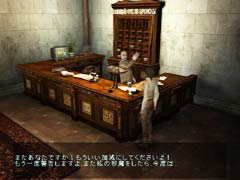
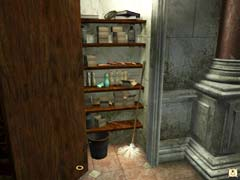

| 概要 | 地図 | |
| 淡いヒント集 | ヒント集 | 的確なヒント集 |
| 攻略最短ルート | Syberia 攻略へ |
| 地域選択へ | 次の段階へ >> |
アラルバッド
|

あなたは、まずホテルの支配人に挨拶に行かなければならない。支配人は、あなたが来たことについては歓迎するだろうが、ヘレナとあうことは断固として拒否するに違いない。 どう考えても融通が利きそうもないので、ホテルへ侵入する方法を考えなければならない。 
まずは、カウンターのカーテンを引き、支配人にも外が見えるようにしておこう。支配人の位置からは、ホテルの噴水がはっきりと見えるのだ。このことをうまく利用して、ホテルに侵入するのだが・・・。

ホテルのロッカーには、色々なものが置いてある。モップで戦うのもいいのだが、今回は「洗剤」を入手しておこう。洗剤とは、水に溶かすと泡立つのだ。噴水に混ぜて、ちょっとしたいたずらに使える。 噴水の中に洗剤を流し込むと、中の水が泡だって外へあふれ出す。その光景を支配人に見せると、彼は大慌てで外へ行ってしまうだろう。 では、サッカーに熱中する彼をどうやったら振り向かすことができるだろうか? 簡単なことである。カウンターにある呼び鈴を探して、何度も押せばいいのだ。 支配人がいなくなったら、カウンターの中に入って机を調べよう。色々な品が置いてあるが、今必要なのは机に取り付けられたボタンで扉のロックを外すことだ。 |
| 地域選択へ | 次の段階へ >> |
| 概要 | 地図 | |
| 淡いヒント集 | ヒント集 | 的確なヒント集 |
| 攻略最短ルート | Syberia 攻略へ |
Syberia
| 目次へ戻る | ページの上部へ |